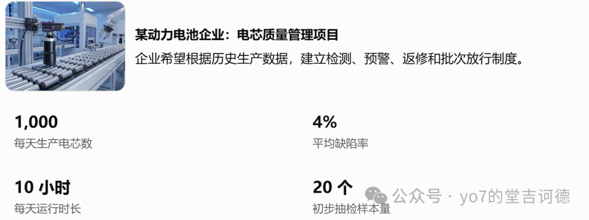
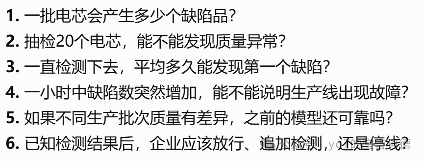
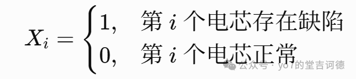
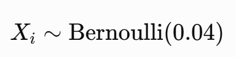
那么这20次检测就构成20重伯努利试验，这个时候我们研究的是缺陷数量
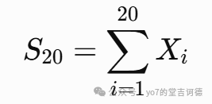
这样我们就通过函数将复杂随机结果映射到我们关心的统计量。
我们将关心的统计量作为新的随机变量，就可以得到二项分布
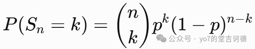
3。当然上述的前提信息是已知平均缺陷率，在不知道的情况下，我们就要通过有限次检测得到缺陷率，那便得到超几何分布
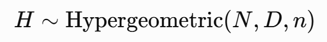
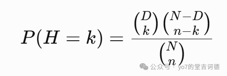
N为总体，D为缺陷数，n为抽取检测的样品数
所以说超几何分布可以看作条件二项模型
4。之前是检测次数固定，研究缺陷品的数量，现在我们固定缺陷品的数量为1，来研究检测次数，定义一个随机变量
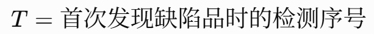
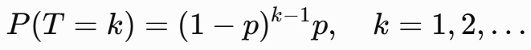
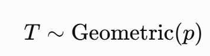
那么就得到几何分布，
几何分布是无记忆的，过去已经等待了多久，不会改变未来还需要等待的次数分布
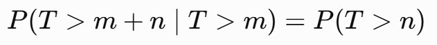
5。更进一步，如果企业要发现三个缺陷才启动深度设备诊断，那么定义随机变量
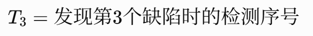
我们去看前两次缺陷，发现第 k 次必须是缺陷，所以
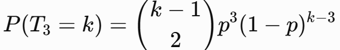
一般的
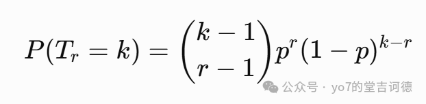
这就是负二项分布
6。当我们将观察尺度从产品数量切换为时间，来看达到目的所需要的时间，定义
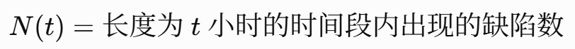
假设我们把一小时划分成 n个非常短的小时间段，每段发生故障的概率为 p，并近似认为不同小段独立且每段至多出现一次缺陷，那么故障总次数近似服从一个二项分布，现在让时间段划分得越来越细，即
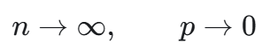
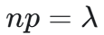
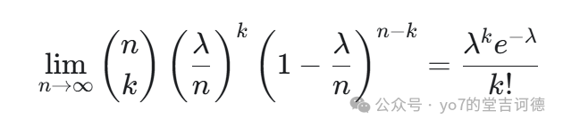
这就得到了泊松分布，泊松分布可以看作大量独立、微小概率事件的计数极限，而 lambda就是所有这些微小发生概率累积形成的期望次数，也可以理解为在一个固定的时间或空间区间内，某类随机事件发生的平均次数。这时候我们可以得出
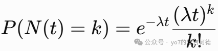
回到我们需要解决的问题，就我们先看一下企业是否应该在一小时出现9个缺陷时报警
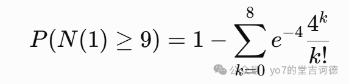
带入数值
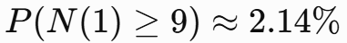
这说明了即使设备完全正常，仍然有2.14%的小时会触发报警
7。但实际企业中的缺陷并非只有“出现”和“不出现”两种状态，可能有多个原因导致，这就是多项分布，在这里，我们就要定义一个随机向量，先定义随机变量，
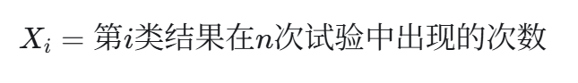
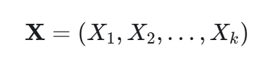
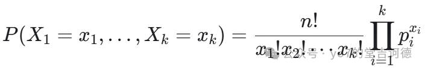
满足
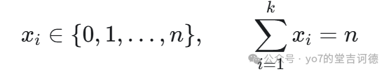
7。当然，我们之前的假设是用了平均缺陷率，但在实际过程中显然会出现过度离散，就是观察到的数据方差明显高于标准二项分布或泊松分布的预测，那么不同批次的缺陷率 p本身是随机变量，同时单纯知道概率并不能做出完整的决策，还必须引入成本。企业并不是要最大化检测准确率，而是要最小化风险与检测成本构成的总期望损失。这个决策部分就后面再考虑吧，所以对于一个问题，我们要从随机过程构造随机变量，再由概率模型支持决策
二。工程力学
就是首先我们研究一个变形体的受力，在一些假设的情况下，外力就是静力学，内力就需要考虑多一些东西了，然后还需要考虑应力，来研究一个截面上的每一小块材料，究竟承受着怎样的力
材料力学并不需要逐个研究原子，而是采用连续介质模型，用应力、应变等连续场来描述材料
工程学问题其实还是很看重结果的，先看如何求内力，内部任意截面上的合内力，可以通过研究截面一侧的外力，由平衡方程确定。其实还是很简单的，但一个模式化的步骤还是很重要的
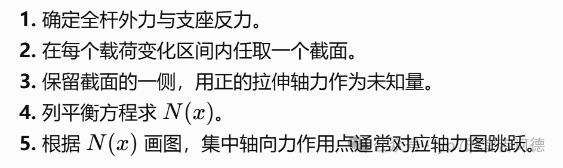
工程师常常比较它们的应力、应变与材料允许的承载能力，所以材料局部处于什么受力状态很重要，于是就定义应力
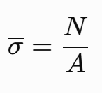
当我们不断缩小所研究的面积，在连续介质模型中定义
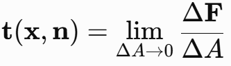
这个取极限的过程看似只是数学上的趋于无穷，但在现实中却截然不同，因为材料内部可能有晶粒、第二相、孔洞、夹杂物等微观结构，工程中的宏观平均应力，与晶粒内部或缺陷附近的局部应力，并不总是一回事。这个应力其实是一个二阶张量，还有一些复杂的分析之后再讨论一下吧（实则接受太多信息消化不了了）